Algas con clorofila a y ficobiliproteínas
-
Algas con cianelas y ausencia de cloroplastos.... Glaucophyta
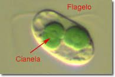 -
Algas sin cianelas y con cloroplastos.... Rhodophyta
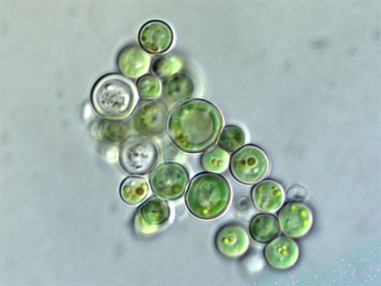 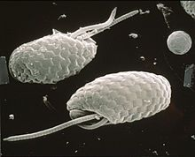 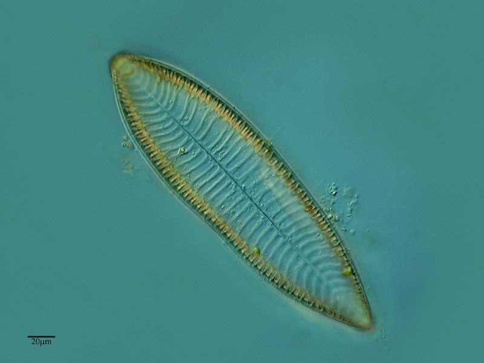 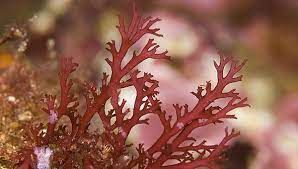 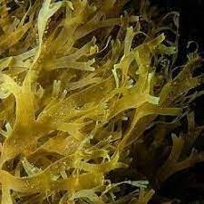 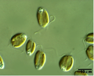
© CIIDEPT–2022
Algas con cianelas y ausencia de cloroplastos.... Glaucophyta
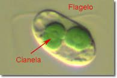Algas sin cianelas y con cloroplastos.... Rhodophyta
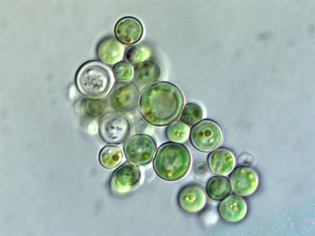 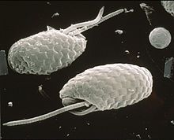 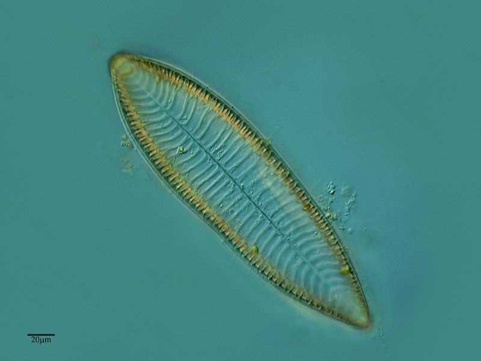 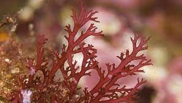 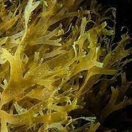 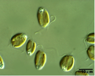© CIIDEPT–2022